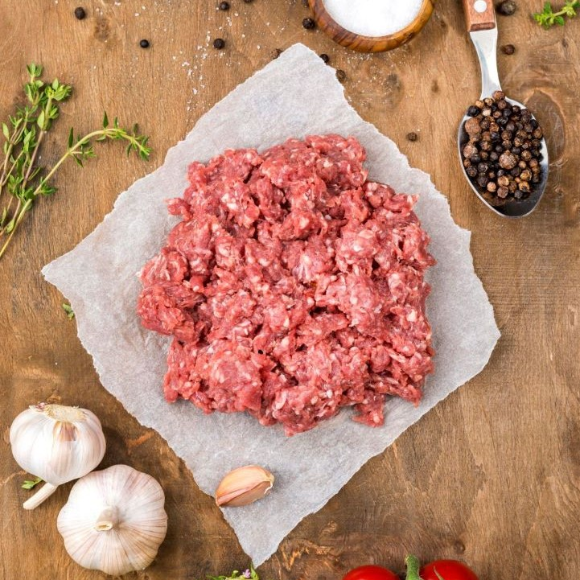
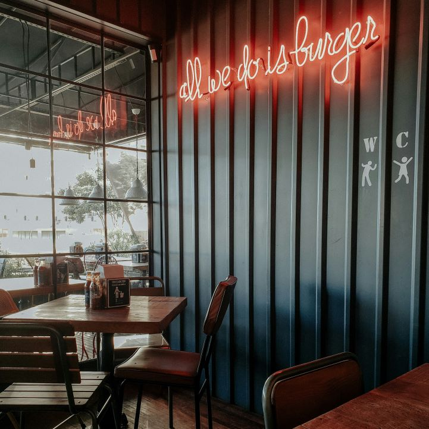

Köttkvalitet är grunden för varje burgare.
Noblemans Burgers använder svenskt högrevskött. Denna fetthaltiga blandning ger burgaren en distinkt, saftig och rik köttsmak som är typisk för hantverksburgare.

Gemensam kunskap och engagemang.
Personalen utmärker sig genom sin uppriktiga kärlek till matlagning, vilket märks i det noggranna hantverket bakom varje burgare och deras förmåga att inspirera gästerna med entusiasm.

Härligaste Burgarstället i Stan.
Noblemans Burgers har etablerat sig på centrala platser, ofta i lokaler som kombinerar en modern, stilren design med en rustik och inbjudande känsla för alla besökare.